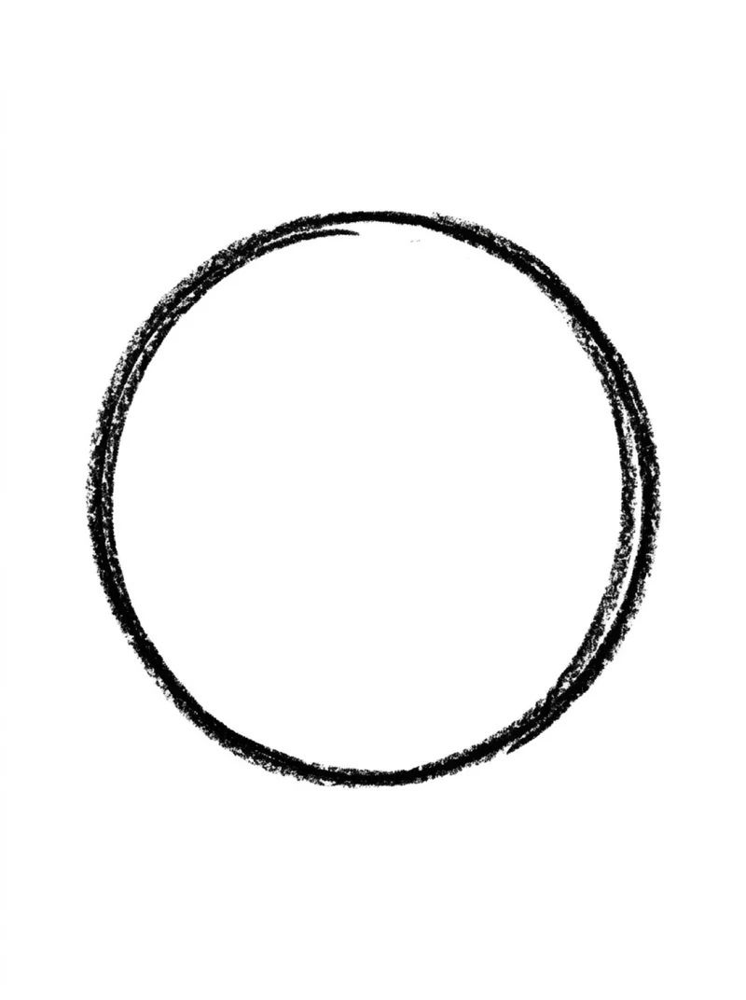
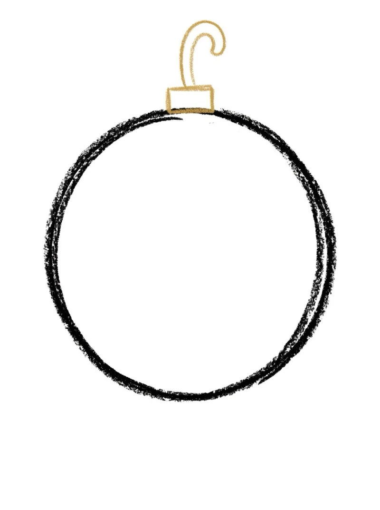
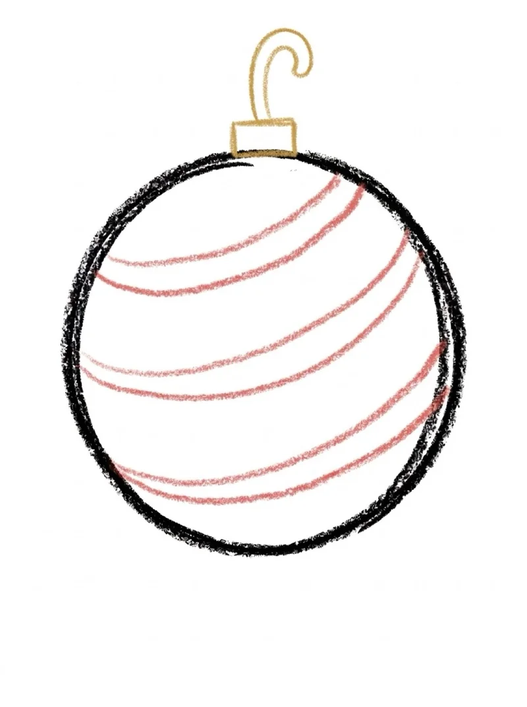
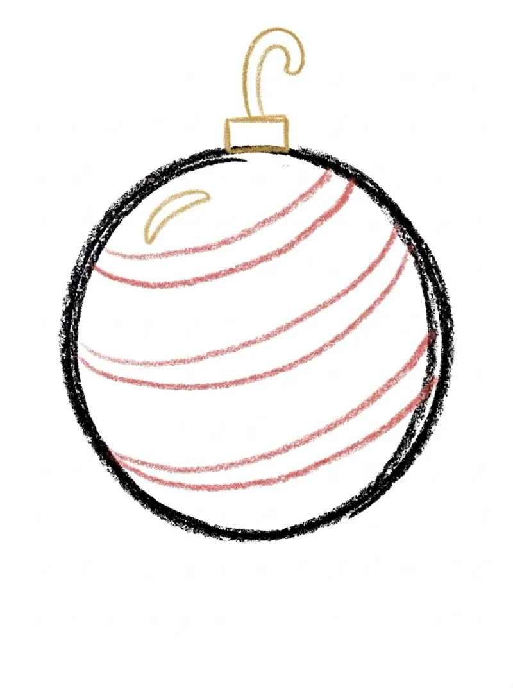
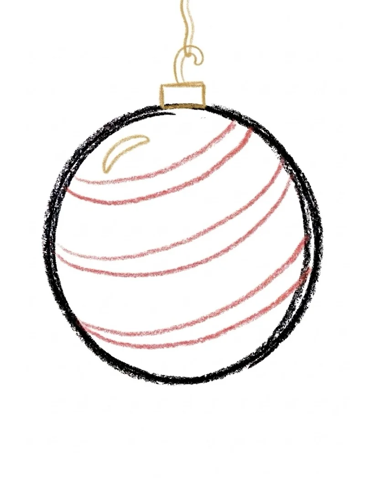
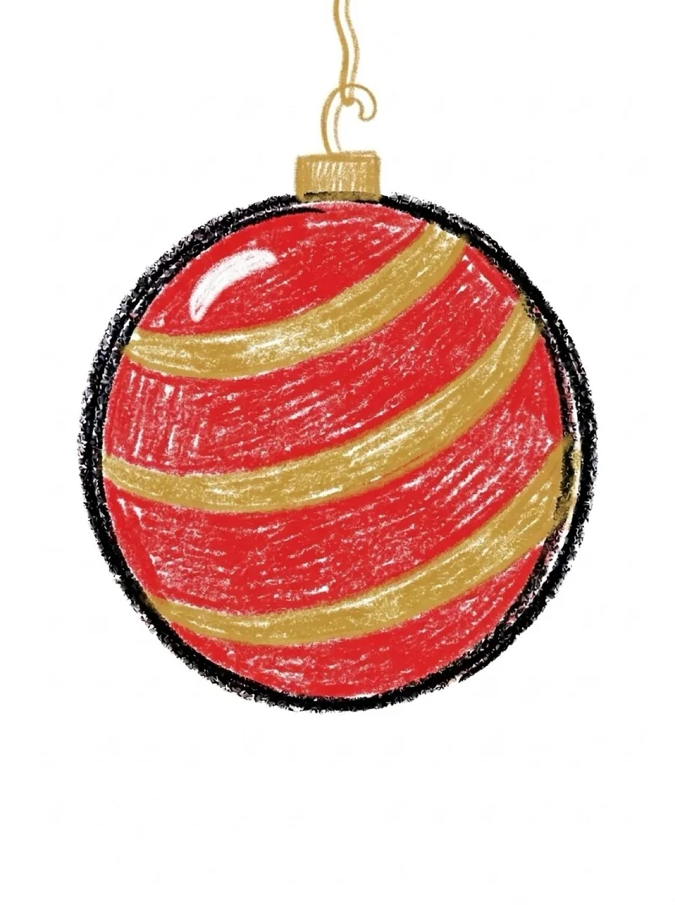

Christmas Ornament Drawing for Kids How to Draw a Christmas Ornament in 6 Easy Steps
Ornaments are the perfect Christmas drawing — one circle, endless decoration possibilities. Kids love this one because the pattern step is pure creative freedom: stripes, dots, zigzags, whatever they want. Five different ornaments in a row makes a fridge-worthy collection.
Last updated:
Quick Answer
This free step-by-step tutorial shows kids how to draw a christmas ornament in six easy steps: one big circle bauble, a cap and hook, swooping stripes, a shine mark, a hanging string, and color. Download the printable PDF, grab crayons, and follow along together. Made for ages 3 and up — no signup needed, just print and draw.
At a Glance
- Subject: How to draw a christmas ornament
- Ages: 3+
- Steps: 6 steps
- Time: ~20 min
- Difficulty: Easy
- Supplies: Paper, crayons
✏️ How to Draw a Christmas Ornament: Step by Step
One step per box — draw each new part in a different color so kids can see exactly what changed.
Step 1: The Bauble

Draw a big circle in the middle of your paper. This round shape becomes your ornament.
Step 2: The Cap and Hook

Draw a small rectangle cap on top of the circle and a curved hook above it — like a candy cane curl. The hook is how it hangs on the tree.
Step 3: The Stripes

Draw curved stripes swooping across the ball — arcs that follow the circle's curve from one side to the other. Keep them inside the circle's outline.
Step 4: The Shine

Add a curved shine line on one side of the ball — a small banana-shaped curve. Shine makes it look glassy and real.
Step 5: The String

Draw a string going up from the hook — a slightly wavy vertical line. Now your ornament is ready to hang.
Step 6: Color It In

Color your ornament! Red with gold stripes is classic, but blue, purple, or rainbow stripes are all beautiful.
📊 Christmas Ornament Drawing by Age
Every age can join in — just adjust the job.
| Age | What they can do | Tip |
|---|---|---|
| 3–4 | Trace the big circle on the printable | Draw the cap for them — the little rectangle sits on a curve |
| 4–5 | Follow all 6 steps with a little help | The swooping stripes are great fine-motor practice |
| 6+ | Draw solo and add their own details | Challenge: draw a christmas ornament melting (droopy!) |
🖨️ Download Your Free Christmas Ornament Drawing Printable
The printable lays out all 6 steps one per box, big enough for little hands — kids draw right alongside each step.
⬇️ Download Free Printable 🖨️ Print🎁 Free printable for ages 3+
More Drawing Pages
Tap any picture to open its tutorial and draw along step by step.
🎄 Ornament Collection Challenge
Draw five ornaments in a row across the page — but make every single one different. Stripes on one, dots on another, zigzags, stars, plain with just shine. A collection page builds pattern thinking and decision-making, and it looks gorgeous on the fridge.
What You'll Need to Draw a Christmas Ornament
Grab crayons or markers — ornaments are a color explosion. Red, gold, blue, green, purple — the more metallic-looking colors the better. A white or very light crayon for the shine mark helps it pop. Standard printer paper works fine.
What They're Learning
This ornament tutorial practices circles and curved lines — the stripes are arcs that follow the ball's curve, which teaches kids to match their lines to a shape's contour. Keeping the stripes inside the circle's outline (not scribbling past the edge) builds boundary control and patience. The shine mark introduces the idea of light and reflection in a kid-friendly way.
Make It Yours
Once the basic ornament is done, try these twists: fill it with polka dots instead of stripes, draw a tiny star or tree inside it like a snow globe, or make it a heart-shaped ornament instead of round. Kids can also draw a whole tree branch with three ornaments hanging from it — string, hook, and all.
🛒 Our Favorite Drawing Supplies
These are the supplies we reach for in our own home — washable (because kids), quality paper, and enough colors to avoid fights.
As an Amazon Associate, MomYouNeedThis earns from qualifying purchases — at no extra cost to you.
💡 Christmas Ornament Drawing Tips for Parents
The big circle is the whole ornament — it should fill most of the page. If your child draws it small, the stripes and shine get cramped. The shine is a small curved shape on one side of the ball, and it's what makes the ornament look round and glassy instead of flat. Kids love this detail because it's the one that makes adults say "wow."
Two things that help with every christmas ornament drawing attempt: let them pick the colors (a blue christmas ornament is still a christmas ornament), and don't fix their drawing. If they ask for help, draw on a separate piece of paper, not on theirs. Kids who feel ownership of their drawing come back for the next one; kids who feel corrected stop trying. The goal is a christmas ornament they're proud of, not a perfect one.
🔮 Christmas Ornaments in the Real World
The first Christmas ornaments weren't glass at all — they were snacks. In Germany, families hung apples, nuts and gingerbread on the tree and ate the decorations after the holiday. Glassblowers in the German town of Lauscha learned to blow thin glass balls in the 1800s, silvered them inside so they shone, and the bauble in this drawing was born.
That shine is real science: a classic bauble is coated inside with a silver solution, making it a tiny round mirror — which is why step 4's little shine mark makes a drawing look glassy and true. The cap and hook are real engineering, too. The glass ball's neck slots into the metal cap, the hook threads through its loop, and that tiny assembly holds the whole ornament on the branch.
✋ Warm-Up: Big Circles and Swooping Stripes
The ornament is one big circle plus decoration, so warm up big. Fill scrap paper with the largest circles your child's arm can sweep — the real bauble should fill most of the page, and small practice circles train the wrong size. Then, inside each circle, swoop stripes from one side to the other, curving with the ball.
Finish with two small moves: banana-shaped shine curves, a row of little smiles standing up, and one long wavy vertical line — the string. Stripes that follow the curve are the whole trick of step 3, and they're much easier the second time your hand tries them.
📖 Give Your Christmas Ornament a Story
Ornaments live two lives: a month on the tree, eleven months in a box. So where does this one hang — up top where it can see the whole room, or down low where it can watch for the cat? Is it brand new this year, or the oldest one in the box, with seniority? Have your child dictate a sentence or two for under the drawing.
An ornament with a history is how collections start. Next drawing session can add the ornament that hangs beside it — a partner, a rival, a best friend from the same box. By the time a row of them crosses the fridge, your child isn't just drawing decorations; they're curating, and curators have opinions worth hearing.
🔮 Christmas Ornament Drawing Step by Step: Fixes for Wobbly Ornaments
Circles come out egg-shaped, and on an ornament that's barely a problem. Real baubles come in teardrops, onions and bells as well as balls — put the cap on the narrow end of an egg and it's a teardrop ornament, a shape you can buy in any shop. If your child insists on round, round it from outside: draw a second, wider arc over the flat side and colour the crescent between as a stripe. The fix becomes decoration.
Stripes are the second wobble. They should arc with the ball; stripes drawn ruler-straight turn the bauble into a beach ball — which, coloured in alternating panels, also looks completely deliberate. Stripes that escaped outside the outline are harder to hide, so don't: connect them around the outside and the ornament is now wearing a ribbon, ends and all. Patterns forgive almost anything, as long as the result looks chosen.
The small parts cause the last wobbles. A cap that floats above the ball just needs its sides extended down until they touch — caps grip the glass, they don't hover. A shine mark parked in the centre can look like a nose; slide its meaning sideways by adding a second, smaller shine dot beside it, because real baubles often show two highlights. And a string that starts beside the hook instead of from it gets fixed by drawing the hook's curl a little bigger, until it swallows the string's end.
📚 Keep Exploring
More free drawing tutorials and coloring pages made for little hands and busy parents.
✏️ All Drawing Tutorials❓ Christmas Ornament Drawing FAQs
What is the easiest way for a kid to draw a Christmas ornament?
Start with a big circle, then add a small rectangle cap and a curved hook on top. Decorate with swooping stripes inside the circle, add a shine mark, and draw a string from the hook. Circles and curves do all the work.
What age can kids start learning to draw a Christmas ornament?
Most kids can follow the circle method around age 3 with a grown-up helping, and draw one on their own by ages 4 to 5. Younger children can trace the circle and stripes on the printable.
What supplies do we need to draw a Christmas ornament?
Just paper and crayons or markers. The free printable PDF lays out all six steps one per box so kids can draw right alongside each step. Shiny colors make the best ornaments.
Is the Christmas ornament drawing printable really free?
Yes — every printable on MomYouNeedThis is 100% free to download and print. No signup, no payment, just tap the download button.
How do I print the Christmas ornament drawing tutorial?
Open the PDF and print at 100% scale (not 'fit to page') so the drawing boxes stay big enough for little hands. The printable is designed to stay large — never shrunk to force a fit. The print button opens the full-size page in a new tab if you prefer to print from there.